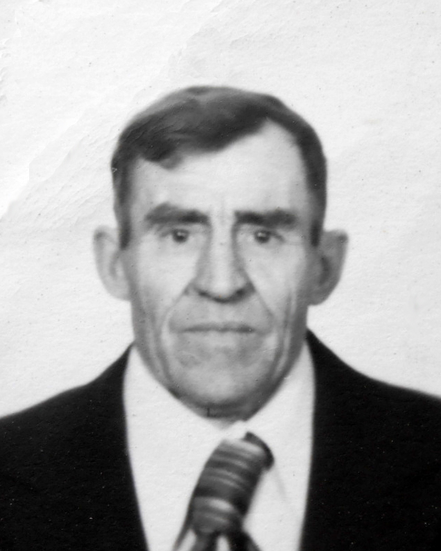
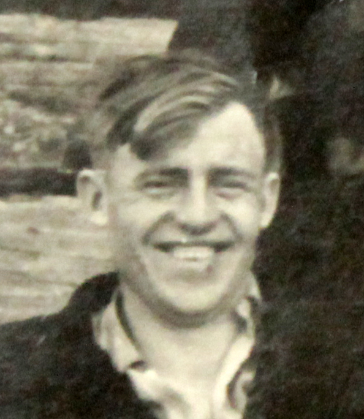

Продолжительность жизни: 68
1940 -1944 - столяр 2 разряда г. Назарово
с 09.07.1955 - Назаровский угольный разрез №2. Сцепщик ж.д.транспорта
с 24.03.1956 - составитель ж.д.транспорта
с 05.04.1957 - плотник в Краснополянском совхозе
с 04.01.1958 - продавец магазина
с 20.04.1958 - рабочий в Краснополянском совхозе ферма №9
с 05.04.1960 - зоотехник фермы №9 (с. Селедково)
с 08.04.1963 - плотник в Ргайтинском овце-сохозе (Казахстан)
с 09.10.1963 - плотник фермы №9 Краснополянский совхоз, животновод на ферме №8
с 25.11.1968 - животновод на ферме №1
с 10.01.1969 - рабочий на ферме №1
с 01.07.1969 - ст.рабочий кладовой центрального склада совхоза
с 11.08.1975 - рабочий стройотдела
с 14.09.1975 - кладовщик стройотдела
с 29.06.1978 - рабочий стройотдела
с 12.09.1979 - зоотехник молочного крупнорогатого скота
с 21.11.1980 - рабочий фермы №1
с 28.10.1992 - плотник в профилактории Назаровская ГРЭС
Воинское звание: старшина, командир стрелкового отделения
Награжден орденом Отечественной войны II степени
Медали:
1. "За победу над Японией"
2. "30 лет Советской армии и Флота"
3. "70 лет вооруженных сил СССР"
4. "20 лет победы в Великой отечественной войне 1941 - 1945гг."
5. "30 лет победы в Великой отечественной войне 1941 - 1945гг."
6. "40 лет победы в Великой отечественной войне 1941 - 1945гг."
7. "50 лет победы в Великой отечественной войне 1941 - 1945гг."
8. "60 лет победы в Великой отечественной войне 1941 - 1945гг."
9. "70 лет победы в Великой отечественной войне 1941 - 1945гг."
Отец: Герилович Федор Викентьевич (1887 - 1958)
Мать: Герилович Евдокия Афанасьевна (11.1894 - 11.1954)
Сестра: Саулевич (Герилович) Варвара Федоровна (18.12.1910 - 24.12.1985)
Сестра: Кононенко (Герилович) Анна Федоровна (14.10.1913 - 03.11.2001)
Сестра: Притула (Герилович) Любовь Федоровна (15.04.1926 - 06.06.2014)
Брат: Герилович Николай Федорович
Сестра: Голощапова (Герилович) Александра Федоровна (1930)
Жена: Герилович (Казакова) Валентина Васильевна (22.04.1932 - 22.06.1998)
Дочь: Сергунина (Герилович) Людмила Леонидовна (14.02.1953)
Сын: Герилович Валерий Леонидович (06.12.1957)
Родился: 01.01.1927, г. Назарово. Отец: Герилович Федор Викентьевич. Мать: Герилович Евдокия Афанасьевна.
Родилась дочь: Сергунина (Герилович) Людмила Леонидовна, 14.02.1953. Мать: Герилович (Казакова) Валентина Васильевна.
Родился сын: Герилович Валерий Леонидович, 06.12.1957, с. Селедково. Мать: Герилович (Казакова) Валентина Васильевна.
Женился. Жена: Герилович (Казакова) Валентина Васильевна.
Умер: 25.01.1995, г. Назарово. Причина смерти: Рак легких.
. . |